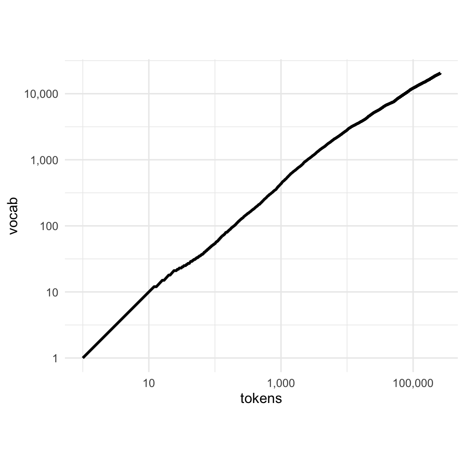

Tokenization
python
def wrap_print(tokens, width = 5):
for idx, token in enumerate(tokens):
print(f"'{token}'", end = "\t")
if (idx+1) % width == 0:
print("")Lesson 1: Data is Messy
Headers, etc.
If you go take a look at the plain-text version of Moby Dick on Project Gutenberg, you’ll see that it starts out with the following block of text:
txt
The Project Gutenberg eBook of Moby Dick; Or, The Whale
This ebook is for the use of anyone anywhere in the United States and
most other parts of the world at no cost and with almost no restrictions
whatsoever. You may copy it, give it away or re-use it under the terms
of the Project Gutenberg License included with this ebook or online
at www.gutenberg.org. If you are not located in the United States,
you will have to check the laws of the country where you are located
before using this eBook.
Title: Moby Dick; Or, The Whale
Author: Herman Melville
Release date: July 1, 2001 [eBook #2701]
Most recently updated: August 18, 2021
Language: English
*** START OF THE PROJECT GUTENBERG EBOOK MOBY DICK; OR, THE WHALE ***And if you scroll to the very bottom of the file, you’ll also find a very long block of text describing the Project Gutenberg License. If we wanted to analyze the text of Moby Dick, we’d have to make sure to remove these headers and footers appropriately.
I’ve been using gutenbergpy to get text from project Gutenberg, which has a special function gutenbergpy.textget.strip_headers() to handily remove these headers.
Similarly, if you wanted to analyze the text of the course notes, and you downloaded the html page, on each page you’d be faced with a long header looking like this:
html
!DOCTYPE html>
<html xmlns="http://www.w3.org/1999/xhtml" lang="en" xml:lang="en"><head>
<meta charset="utf-8">
<meta name="generator" content="quarto-1.4.549">
<meta name="viewport" content="width=device-width, initial-scale=1.0, user-scalable=yes">
<meta name="author" content="Josef Fruehwald">
<meta name="dcterms.date" content="2024-01-16">
<title>Lin511-2024 - Regular Languages and Finite State Machines</title>
<style>
code{white-space: pre-wrap;}
span.smallcaps{font-variant: small-caps;}
div.columns{display: flex; gap: min(4vw, 1.5em);}
div.column{flex: auto; overflow-x: auto;}
div.hanging-indent{margin-left: 1.5em; text-indent: -1.5em;}
ul.task-list{list-style: none;}
ul.task-list li input[type="checkbox"] {
width: 0.8em;
margin: 0 0.8em 0.2em -1em; /* quarto-specific, see https://github.com/quarto-dev/quarto-cli/issues/4556 */
vertical-align: middle;
}
/* CSS for syntax highlighting */
pre > code.sourceCode { white-space: pre; position: relative; }
pre > code.sourceCode > span { line-height: 1.25; }
pre > code.sourceCode > span:empty { height: 1.2em; }
.sourceCode { overflow: visible; }
code.sourceCode > span { color: inherit; text-decoration: inherit; }
div.sourceCode { margin: 1em 0; }
pre.sourceCode { margin: 0; }
@media screen {
div.sourceCode { overflow: auto; }
}
@media print {
pre > code.sourceCode { white-space: pre-wrap; }
pre > code.sourceCode > span { text-indent: -5em; padding-left: 5em; }
}
pre.numberSource code
{ counter-reset: source-line 0; }
pre.numberSource code > span
{ position: relative; left: -4em; counter-increment: source-line; }
pre.numberSource code > span > a:first-child::before
{ content: counter(source-line);
position: relative; left: -1em; text-align: right; vertical-align: baseline;
border: none; display: inline-block;
-webkit-touch-callout: none; -webkit-user-select: none;
-khtml-user-select: none; -moz-user-select: none;
-ms-user-select: none; user-select: none;
padding: 0 4px; width: 4em;
}
pre.numberSource { margin-left: 3em; padding-left: 4px; }
div.sourceCode
{ }
@media screen {
pre > code.sourceCode > span > a:first-child::before { text-decoration: underline; }
}
/* CSS for citations */
div.csl-bib-body { }
div.csl-entry {
clear: both;
margin-bottom: 0em;
}
.hanging-indent div.csl-entry {
margin-left:2em;
text-indent:-2em;
}
div.csl-left-margin {
min-width:2em;
float:left;
}
div.csl-right-inline {
margin-left:2em;
padding-left:1em;
}
div.csl-indent {
margin-left: 2em;
}</style>
...That’s not even the end of it.
Markup
Once we get to the content of the text, there’s still “markup” to deal with. Here’s a sentence from Moby Dick.
txt
But _being paid_,—what will compare with it?The underscores _ are there to indicate italics in the original text. Here’s how it looks when rendered:
If we just split this text up into words based on spaces, those underscores (and other punctiuation) are going to stuck around.
python
sentence = "But _being paid_,—what will compare with it?"
wrap_print(sentence.split(" "))'But' '_being' 'paid_,—what' 'will' 'compare'
'with' 'it?' I don’t think “paid_,-what” is a word.
The same issue goes for trying to analyze text from the course notes. Here a paragraph from the finite state automata notes.
html
<p>
But since this is <em>Computational</em> Linguistics,
we should probably learn about what is
“regular” about “regular” expressions,
because it’s related to formal language
theory!
</p>Again, if we want to analyze the text, we’d need to extract it from this markup.
Lesson 2: Language is complex.
We already started touching on how we may need to “case-fold” text before we analyze it.
python
import re
from collections import Counter
phrase = """The 2019 film Cats is a movie about cats.
Cats appear in every scene.
A cat can always be seen"""
words = re.split("\s", phrase)
cat_count = Counter(words)
for key in cat_count:
if re.match("[Cc]at", key):
print(f"{key}\t{cat_count[key]}")Cats 2
cats. 1
cat 1Converting the whole phrase to lowercase will help, but there’s still the issue of punctuation.
Tokenization is the non-trivial task of splitting text up into meaningful units.
Tokenization
Setting aside semantic issues, there are a lot of things that happen inside of text, especially if it is transcribed speech, that makes normalizing text and tokenizing it way more challenging than just splitting up on white space and stripping out punctuation, even just for English.
Places to leave in punctuation
Some examples given by Jurafsky & Martin for where you might want to leave in punctuation are:
You don’t want to eliminate punctuation from inside
Ph.D, orm.p.h.. You also don’t want to eliminate it from some proper names, like ampersands inProcter & Gamble,Texas A&M,A&W,m&m's.You’ll want to keep formatting in numerals, and not split them into separate words. These are all possible numeric formats cross culturally for the same quantity
1,000.551.000,551 000,55
Currency symbols should probably be kept together with their numerals, and depending on the culture & denomination.
$0.9999¢€0,99
Dates: There are so many different permutations on how dates can be formatted that I shouldn’t list them all here, but here are some.1
4 digit year, 2 digit month, 2 digit day
2022-09-122022/09/12
4 digit year, 1 or 2 digit month, 2 digit day
2022-9-122022/9/12
2 digit day, 2 digit month, 4 digit year
12-09-202212/09/2022
2 digit day, 1 or 2 digit month, 4 digit year
12-9-202212/9/2022
2 digit day, 2 digit month, 2 digit year
12-09-2212/09/22
2 digit month, 2 digit day, 4 digit year
09-12-202209/12/2022
1 digit month, 2 digit day, 2 digit year
9-12-229/12/22
Emoticons,2 where the token is entirely punctuation
:),>.<.
Places to split up words
Sometimes the tokens you get back from whitespace tokenization ought to be split up even further. One example might be hyphenated words, like hard-won.
hard-won➔hard,wonorhard,-,won.
Another example involves clitics, like n't or 're in English.
isn't➔is,n'tcan't➔ca,n'twhat're➔what,'re
Places to glue words together
You might want to also glue together tokens from whitespace tokenization.
New,York,City➔New York CitySuper,Smash,Brothers➔Super Smash Brothers
Challenges with speech and text
- : $1,500
: “one thousand five hundred dollars”
: “fifteen hundred dollars”
: “one and a half thousand dollars”
: “one point five thousand dollars”
Tokenizers -part 1-
The Natural Language Toolkit library (Bird, Klein, and Loper 2009) has a few tokenizers available.
python
import nltk
from nltk.tokenize import word_tokenize
## The first time you run it,
## you need to download some data
nltk.download('punkt')python
tokens_01 = word_tokenize(sentence)
wrap_print(tokens_01)'But' '_being' 'paid_' ',' '—what'
'will' 'compare' 'with' 'it' '?' The spacy package also has tokenizers available,
bash
pip install spacy
pip install $(spacy info en_core_web_sm --url)python
import spacy
nlp = spacy.load("en_core_web_sm")
doc = nlp(sentence)
wrap_print(doc)'But' '_' 'being' 'paid_,—what' 'will'
'compare' 'with' 'it' '?' Data Sparsity
With any tokenization of text, you’re going to wind up with a lot of tokens that appear just once or twice.
Here’s a plot of the top 10 most frequent tokens in Moby Dick.

The trend of tokens getting less and less frequent continues
There is also a general phenomenon that the larger your corpus of tokens gets, the larger the vocabulary will get.

This means that if you have an “open vocabulary” tokenization method, where you can always create a new token based on some rules, you’ll never be able to analyze enough text such that you’ll never encounter a new token you’ve never seen before.
Closed Vocabulary Tokenization (Byte Pair Encoding)
A different approach to tokenization is to have a pre-specified closed vocabulary that you use to pull tokens out of text.
Let’s start out with a fake training of a byte pair encoder with the simple vocabulary “cats can’t canter”. We kick things off treating every character as a token, plus a specialized start-of-word symbol, which I’m representing with _.
Tokens
_ c a t s
_ c a n ' t
_ c a n t e rTypes
{'a', 'e', 't', 'r',
's', 'n', 'c', "'", '_'}This is, in principle, the smallest and simplest tokenization we could do for any input text. While the total number of words is infinite, the total number of characters or symbols we use to create those words is finite.
The next step is to count up all of the pairs (or bigrams) of tokens in the training data. In this case, both (_, c) and (c, a) appear equally commonly, so I make a decision and say (_, c) is the one we’ll process first. We’ll paste them together, call them a new type, and replace all (_, c) sequences with _c.
tokens
_c a t s
_c a n ' t
_c a n t e rtypes
{'a', 'e', 't', 'r',
's', 'n', 'c', "'", ' ',
`_c`}Repeating the process, the most frequently occurring bigram is now (_c, a), so we’ll add _ca as a new type, and replace all (_c, a) sequences with _ca.
tokens
_ca t s
_ca n ' t _
_ca n t e r _types
{'a', 'e', 't', 'r',
's', 'n', 'c', "'", ' ',
'_c', '_ca'}Finally, the last most frequent sequence is (_ca, n), so we’ll add _can to the vocabulary, and collapse (_ca, n) sequences.
tokens
_ca t s
_can ' t
_can t e rtypes
{'a', 'e', 't', 'r',
's', 'n', 'c', "'", ' ',
'_c', '_ca', '_can'}We’ll stop at that point, but we could either continue for a fixed number of iterations, or until our type, or vocabulary size reaches a fixed number.
The use of Byte Pair Encoding
This kind of tokenization approach is necessary when you want to be able to tokenizer anything, and also have a pre-specified vocabulary size. We can see how OpenAI’s byte pair encoder handles the first few sentences of Moby Dick
python
import tiktoken
enc = tiktoken.encoding_for_model("gpt-4")python
mb_string = """
Call me Ishmael. Some years ago—never mind how long precisely—having
little or no money in my purse, and nothing particular to interest me
on shore, I thought I would sail about a little and see the watery part
of the world. It is a way I have of driving off the spleen and
regulating the circulation.
"""
tokens = [
enc.decode([token])
for token in enc.encode(mb_string.replace("\n", " "))
]
wrap_print(tokens)' Call' ' me' ' Ish' 'ma' 'el'
'.' ' Some' ' years' ' ago' '—'
'never' ' mind' ' how' ' long' ' precisely'
'—' 'having' ' little' ' or' ' no'
' money' ' in' ' my' ' purse' ','
' and' ' nothing' ' particular' ' to' ' interest'
' me' ' on' ' shore' ',' ' I'
' thought' ' I' ' would' ' sail' ' about'
' a' ' little' ' and' ' see' ' the'
' wat' 'ery' ' part' ' of' ' the'
' world' '.' ' It' ' is' ' a'
' way' ' I' ' have' ' of' ' driving'
' off' ' the' ' sple' 'en' ' and'
' regulating' ' the' ' circulation' '.' ' ' 
References
Footnotes
I’m being tedious here on purpose, because you have to keep in mind that if you wrote a function to handle just one of these possible date formats, it would not immediately translate over to the others! There are also entire libraries in multiple programming languages for parsing and reformatting date times. Python: datetime, R: lubridate.↩︎
This example isn’t from Jurafsky & Martin.↩︎
Reuse
Citation
@online{fruehwald2024,
author = {Fruehwald, Josef},
title = {Tokenization},
date = {2024-02-06},
url = {https://lin511-2024.github.io/notes/meetings/03_tokenization.html},
langid = {en}
}